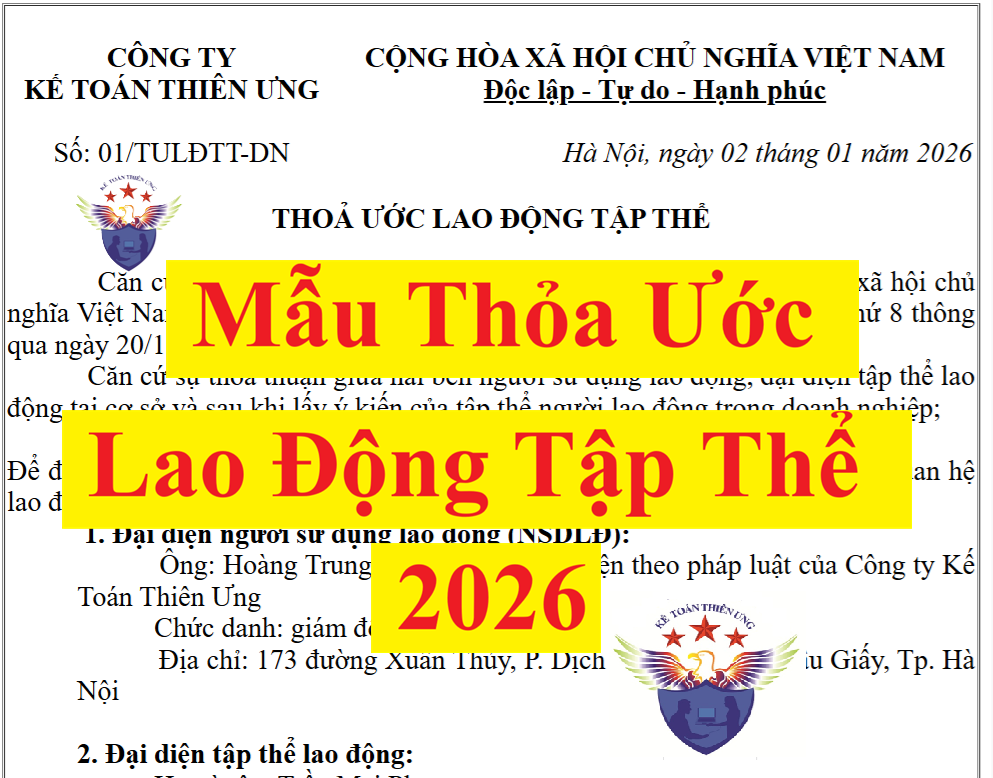

Thỏa ước lao động tập thể là thỏa thuận đạt được thông qua thương lượng tập thể và được các bên ký kết bằng văn bản.
Thỏa ước lao động tập thể bao gồm thỏa ước lao động tập thể doanh nghiệp, thỏa ước lao động tập thể ngành, thỏa ước lao động tập thể có nhiều doanh nghiệp và các thỏa ước lao động tập thể khác.
Dưới đây, công ty đào tạo Kế Toán Diệu Tâm xin được cung cấp cho các bạn các mẫu biểu liên quan đến thỏa ước lao động tập thể:
1. Mẫu thỏa ước lao động tập thể doanh nghiệp mới nhất năm 2026
THOẢ ƯỚC LAO ĐỘNG TẬP THỂ
Căn cứ Bộ Luật Lao động số: 45/2019/QH14 của Nước Cộng hoà xã hội chủ nghĩa Việt Nam ban hành năm 2019 đã được Quốc hội khoá XIV kỳ họp thứ 8 thông qua ngày 20/11/2019 và có hiệu lực thi hành từ ngày 01/01/2021; Căn cứ sự thoả thuận giữa hai bên người sử dụng lao động, đại diện tập thể lao động tại cơ sở và sau khi lấy ý kiến của tập thể người lao động trong doanh nghiệp; Để đảm bảo quyền lợi và nghĩa vụ hợp pháp, chính đáng của mỗi bên trong quan hệ lao động, chúng tôi gồm có: 1. Đại diện người sử dụng lao động (NSDLĐ):
Ông: Trần Quốc Hưng - Người đại diện theo pháp luật của Công ty Kế Toán Diệu Tâm
Chức danh: giám đốc Địa chỉ: 173 đường Xuân Thủy, P. Cầu Giấy, Tp. Hà Nội
2. Đại diện tập thể lao động:
Họ và tên: Trần Mai Phương
Chức danh: Chủ tịch Công đoàn cơ sở Công ty Hai bên thương lượng, thỏa thuận và ký kết Thỏa ước lao động tập thể với các điều khoản sau:
CHƯƠNG I
Điều 1. Phạm vi điều chỉnhNHỮNG QUY ĐỊNH CHUNG Thoả ước lao động tập thể này quy định mối quan hệ lao động giữa tập thể lao động và người sử dụng lao động (NSDLĐ) về các điều kiện lao động và sử dụng lao động, quyền và nghĩa vụ của mỗi bên trong thời hạn Thỏa ước có hiệu lực. Mọi trường hợp khác trong mối quan hệ lao động không quy định trong bản Thỏa ước lao động tập thể này, sẽ được giải quyết theo Bộ Luật Lao động và các văn bản quy phạm pháp luật hiện hành. Điều 2. Đối tượng thi hành
1. Người sử dụng lao động;
Điều 3. Thời hạn của thỏa ước
2. Người lao động (NLĐ) đang làm việc tại Công ty, kể cả NLĐ trong thời gian học nghề, tập nghề, thử việc, NLĐ vào làm việc sau ngày Thỏa ước có hiệu lực đều có trách nhiệm thực hiện những nội dung thoả thuận trong Thỏa ước này; 3. Ban chấp hành Công đoàn cơ sở (BCH CĐCS).
1. Thỏa ước này có hiệu lực 03 năm kể từ ngày ký.
2. Khi thời hạn của Thỏa ước hết hiệu lực hai bên thực hiện theo quy định tại Điều 83 của Bộ Luật Lao động.
CHƯƠNG II
Điều 4. Tiền lương và nâng lươngNỘI DUNG THOẢ ƯỚC LAO ĐỘNG TẬP THỂ 1. Mức lương thấp nhất tại Công ty từ 6.000.000 đồng trở lên. 2. Tiền lương trong thời gian thử việc thấp nhất bằng 85% mức lương công việc đó. 3. Tiền lương làm thêm giờ, làm việc vào ban đêm:
- NLĐ làm thêm giờ được trả lương tính theo đơn giá tiền lương hoặc tiền lương thực trả theo công việc đang làm như sau: vào ngày thường được trả 150%, vào ngày nghỉ hằng tuần được trả bằng 200%; vào ngày nghỉ Lễ, Tết, ngày nghỉ có hưởng lương được trả bằng 300% chưa kể tiền lương ngày Lễ, Tết, ngày nghỉ có hưởng lương đối với NLĐ hưởng lương ngày.
4. Tiền lương ngừng việc: vì sự cố điện, nước hoặc vì lý do kinh tế mà NLĐ phải ngừng việc từ 14 ngày làm việc trở xuống thì NLĐ được trả 100% tiền lương theo HĐLĐ cho những ngày ngừng việc.- NLĐ làm việc vào ban đêm thì được trả thêm bằng 30% tiền lương tính theo đơn giá tiền lương hoặc tiền lương thực trả theo công việc của ngày làm việc bình thường. - NLĐ làm thêm giờ vào ban đêm thì ngoài việc trả lương theo quy định tại khoản 1 và khoản 2 Điều 98 Bộ luật lao động, NLĐ còn được trả thêm 20% tiền lương tính theo đơn giá tiền lương hoặc tiền lương theo công việc làm vào ban ngày của ngày làm việc bình thường hoặc của ngày nghỉ hằng tuần hoặc của ngày nghỉ Lễ, Tết. 5. Chế độ nâng lương: Công ty thực hiện nâng lương định kỳ 01 năm/lần, khoảng cách giữa 02 bậc lương thấp nhất là 5%; NSDLĐ sẽ xét nâng lương trước thời hạn cho NLĐ trong trường hợp có sáng kiến, cải tiến đem lại hiệu quả trong công việc. Điều 5. Tiền phụ cấp Để động viên NLĐ gắn bó lâu dài với Công ty, NSDLĐ thực hiện chính sách hỗ trợ NLĐ các khoản phụ cấp sau:
Ngoài ra, tất cả NLĐ ký HĐLĐ có thời hạn từ đủ 36 tháng trở lên sẽ được hưởng các khoản sau: 1. Phụ cấp thâm niên: 500.000 đồng/tháng. 2. Phụ cấp chuyên cần: 800.000 đồng/tháng. 3. Hỗ trợ nhà ở: 500.000 đồng/tháng (nếu NLĐ đang ở nhà thuê).
4. Phụ cấp trang phục: 3.600.000/người/năm
Điều 6. Tiền thưởng 1. Tiền thưởng lương tháng 13: Công ty sẽ xét thưởng lương tháng 13 cho NLĐ làm việc đủ 12 tháng với mức thưởng ít nhất 01 tháng lương theo HĐLĐ. NLĐ làm việc chưa đủ 12 tháng sẽ tính tỷ lệ tương ứng theo số tháng thực tế làm việc, nhưng ít nhất là 03 triệu đồng. 2. Thưởng sáng kiến: NLĐ có sáng kiến, cải tiến công nghệ, giải pháp quản lý, giải pháp tác nghiệp, tiết kiệm nguyên vật liệu, đào tạo tay nghề cho CNLĐ trực tiếp sản xuất… mang lại hiệu quả kinh tế, hiệu quả công tác quản lý cho Công ty. Công ty trích thưởng từ 10% đến 20% trên giá trị thu được từ các sáng kiến, cải tiến và từ 10% đến 50% giá trị nguyên vật liệu tiết kiệm. Công ty sẽ phát thưởng vào cuối năm. 3. Thưởng đột xuất cho cá nhân, tập thể NLĐ đạt những thành tích trong các trường hợp: phát hiện và báo cáo kịp thời các vụ việc tiêu cực như trộm cắp, lãng phí, tham ô tài sản Công ty, tiết lộ hoặc đánh cắp bí mật kinh doanh, bí mật công nghệ, các nguy cơ khác giúp Công ty tránh được những tổn thất rủi ro. Công ty thưởng từ 20% đến 50% giá trị hiện vật cho người phát hiện và thu hồi tài sản của Công ty bị lấy cắp; các trường hợp khác do Giám đốc quyết định. Điều 7. Thời giờ làm việc, thời giờ nghỉ ngơi, nghỉ giữa ca 1. Thời giờ làm việc: NLĐ được nghỉ sớm 01 tiếng vào ngày thứ bảy hàng tuần được hưởng nguyên lương. 2. Thời giờ nghỉ ngơi tính vào thời gian làm việc: NLĐ được nghỉ giữa giờ làm việc 45 phút liên tục khi làm việc ban ngày, được nghỉ 60 phút liên tục khi làm việc ban đêm. Ngoài ra, NLĐ còn được bố trí nghỉ giải lao 15 phút/ca. 3. Số ngày nghỉ phép năm: 13 ngày/ năm đối với NLĐ làm việc trong điều kiện bình thường; công việc nặng nhọc độc hại 15 ngày/năm; công việc đặc biệt nặng nhọc độc hại 17 ngày/năm. Cứ sau 3 năm tăng thêm 01 ngày phép năm. 4. Nghỉ Lễ, Tết: NLĐ được nghỉ hưởng lương 11 ngày Lễ Tết trong năm: Tết Dương lịch: 01 ngày; Tết Âm lịch: 05 ngày; Lễ Giỗ tổ Hùng Vương: 01 ngày; Lễ 30/4, 01/5: 02 ngày; Lễ 02/9: 02 ngày 5. NLĐ được nghỉ việc riêng mà vẫn hưởng nguyên lương trong những trường hợp sau đây:
- Kết hôn: nghỉ 03 ngày;
6. Các ngày nghỉ khác NLĐ được hưởng nguyên lương:
- Con kết hôn: nghỉ 01 ngày; - Bố đẻ, mẹ đẻ, bố vợ, mẹ vợ hoặc bố chồng, mẹ chồng chết; vợ chết hoặc chồng chết; con chết: nghỉ 03 ngày.
- Kỷ niệm ngày thành lập Công ty nghỉ 1 ngày.
7. NLĐ được hưởng thêm chế độ ngày nghỉ đặc biệt mỗi năm tối đa 03 ngày mà vẫn được hưởng nguyên lương trong những trường hợp sau:
- Đang làm bị bệnh không thể tiếp tục công việc.
8. NLĐ được nghỉ không hưởng lương 02 ngày và phải thông báo với NSDLĐ khi ông nội, bà nội, ông ngoại, bà ngoại, anh, chị, em ruột chết; bố hoặc mẹ kết hôn; anh, chị, em ruột kết hôn.- Gia đình có người nằm viện không có người chăm sóc. Điều 8. Bữa ăn ca
Tiền ăn trưa: 35.000 đồng/người/bữa. Trường hợp làm thêm giờ từ 02 giờ/ngày trở lên, công ty hỗ trợ thêm một bữa ăn nhẹ bằng mì hoặc sữa trị giá bằng 22.000 đồng/người. Khi giá cả thị trường có sự thay đổi, BCH CĐCS và NSDLĐ sẽ trao đổi để điều chỉnh hỗ trợ tiền ăn phù hợp.
Điều 9. Bảo đảm việc làm cho NLĐ 1. NSDLĐ phải đảm bảo việc làm cho NLĐ trong suốt thời gian có hiệu lực của hợp đồng. 2. Hàng năm, NSDLĐ hỗ trợ 100% kinh phí đào tạo, bồi dưỡng nâng cao trình độ tay nghề, chuyên môn nghiệp vụ cho NLĐ. 3. NLĐ hoàn thành tốt nhiệm vụ được giao, không bị xử lý kỷ luật lao động sẽ được tái ký HĐLĐ khi hết hạn hợp đồng. 4. NLĐ rủi ro bị tại nạn lao động từ 31% đến dưới 70% sau thời gian điều trị, NSDLĐ tạo điều kiện, bố trí công việc phù hợp với sức khoẻ của NLĐ. 5. Trường hợp Công ty do thay đổi cơ cấu, công nghệ hoặc vì lý do kinh tế, dịch bệnh mà nhiều NLĐ có nguy cơ mất việc làm, phải thôi việc, nghỉ chờ việc thì Công ty giải quyết như sau:
- Công ty xây dựng phương án sắp xếp lao động và trao đổi, bàn bạc với CĐCS trước khi triển khai thực hiện. NLĐ được điều chuyển trong hệ thống Công ty, đảm bảo số lượng NLĐ phải nghỉ việc ít nhất.
- Đào tạo, đào tạo lại nghiệp vụ tay nghề của NLĐ cho phù hợp với yêu cầu thực tế. Đối với trường hợp không bố trí được công việc thì tạo điều kiện cho đi học nghề mới theo nguyện vọng. Học phí và tiền lương trong những ngày đi học do Công ty chi trả. - Trường hợp không thể đảm bảo được việc làm cho NLĐ thì ngoài giải quyết chế độ theo quy định, Công ty sẽ hỗ trợ thêm cho NLĐ để ổn định cuộc sống trong thời gian xin việc mới (mức hỗ trợ căn cứ điều kiện tài chính của Công ty thời điểm đó) và giới thiệu sang Công ty khác có nhu cầu về lao động. Ưu tiên tuyển lại lao động cũ nếu Công ty phục hồi sản xuất. - Trong trường hợp phải cho nhiều NLĐ nghỉ việc thì những trường hợp sau đây được Công ty giữ lại làm việc: NLĐ là cán bộ CĐCS, NLĐ hoàn thành tốt nhiệm vụ, NLĐ mang thai, nuôi con nhỏ, đang nghỉ chế độ thai sản; NLĐ bị tai nạn lao động từ 31% trở lên, NLĐ mắc bệnh hiểm nghèo. Điều 10. Bảo đảm an toàn, vệ sinh lao động; thực hiện nội quy lao động 1. Công ty đảm bảo nhà xưởng làm việc thoáng mát, tăng cường diện tích/bố trí cây xanh tại nơi làm việc; vào mùa nắng nóng tăng cường nước uống đảm bảo giải nhiệt cho NLĐ. 2. Công ty thực hiện sắp xếp ca kíp sản xuất, trang bị cơ sở vật chất, phương tiện đảm bảo công tác phòng chống dịch bệnh cho NLĐ. 3. Thưởng tuân thủ nội qui Công ty: là 100.000 đồng/tháng. 4. Thưởng tuân thủ quy định về ATVSLĐ: là 100.000 đồng/tháng. 5. NLĐ trong thời gian có quyết định xử lý kỷ luật lao động mà có thành tích xuất sắc (hoặc làm lợi cho Công ty từ 5.000.000 đồng trở lên) được xem xét rút ngắn thời gian kỷ luật hoặc xóa án kỷ luật. 6. Trước khi ban hành, sửa đổi, bổ sung nội quy lao động, NSDLĐ phải trao đổi và thống nhất về nội quy lao động với BCH CĐCS Công ty. Điều 11. Thực hiện bình đẳng giới, phòng chống bạo lực và quấy rối tình dục tại nơi làm việc. 1. NLĐ nữ trong thời gian mang thai, nuôi con nhỏ chấp hành tốt nội quy lao động, sẽ được tiếp tục ký hợp đồng lao động mới khi hợp đồng lao động cũ hết hạn. 2. NLĐ trong thời gian mang thai được hỗ trợ tiền sữa: 200.000 đồng/người/tháng 3. NLĐ nữ nuôi con nhỏ dưới 6 tháng, Công ty hỗ trợ 300.000 đồng/tháng. 4. NLĐ có con nhỏ gửi trẻ, mẫu giáo, Công ty hỗ trợ 1.000.000 đồng/bé/tháng. 5. Công ty có trách nhiệm xây dựng môi trường làm việc không có bạo lực, không quấy rối tình dục, loại bỏ những yếu tố có thể gây quấy rối tình dục tại nơi làm việc. Nếu có xảy ra quấy rối tình dục tại nơi làm việc phải kịp thời giải quyết và đưa ra phương án cải thiện có liên quan; 6. Công ty phải kịp thời ngăn chặn, xử lý và có biện pháp bảo vệ bí mật, danh dự, uy tín, nhân phầm, an toàn cho nạn nhân bị quấy rối tình dục, người khiếu nại và người bị khiếu nại; 7. Thành viên tham gia giải quyết khiếu nại liên quan đến quấy rối tình dục tại nơi làm việc phải bảo đảm bình đẳng giới; phải bao gồm đại diện của Công ty và đại diện của CĐCS. Các thành viên tham dự không được tự ý tiết lộ bất cứ thông tin liên quan đến vụ việc, nếu phát hiện sẽ xử lý theo nội quy của Công ty. Điều 12. Cơ chế, phương pháp phòng ngừa, giải quyết tranh chấp lao động 1. Khi NLĐ có thắc mắc, phản ánh về các nội dung có liên quan đến quyền, lợi ích, nghĩa vụ của NLĐ, về biện pháp quản lý, quy định hoặc điều kiện làm việc liên quan của Công ty hoặc bị quấy rối (bao gồm quấy rối tình dục), ngược đãi, bạo lực hoặc kỳ thị tại nơi làm việc, có thể đề nghị hỗ trợ tư vấn từ trưởng bộ phận nhân sự hoặc đại diện CĐCS. 2. Trong thời hạn 5 ngày làm việc, kể từ khi nhận được văn bản của BCH CĐCS phản ảnh có liên quan đến chế độ chính sách của NLĐ tại Công ty; NSDLĐ có văn bản thông tin phản hồi đến BCH CĐCS. 3. Công ty không được cản trở, cấm NLĐ vào nơi làm việc trong khi đang giải quyết tranh chấp lao động. Điều 13. Điều kiện, phương tiện hoạt động của CĐCS; mối quan hệ giữa NSDLĐ và CĐCS. 1. CĐCS phải xây dựng kế hoạch hoạt động trong năm gửi Giám đốc để phối hợp thực hiện. Trường hợp có kế hoạch đột xuất phải thông báo bằng văn bản cho NSDLĐ biết trước ít nhất 3 ngày. 2. Công ty tạo điều kiện về thời gian, hội trường (phòng họp), âm thanh, bàn, ghế,. cho CĐCS tổ chức các hoạt động 1 quý/lần: tổ chức tuyên truyền chính sách pháp luật có liên quan đến đoàn viên Công đoàn, NLĐ; hội họp; hội nghị, hội thao, tổng kết hoạt động Công đoàn. 3. Công ty cho phép cán bộ CĐCS được sử dụng 32 giờ làm việc trong một tháng đối với Chủ tịch, Phó Chủ tịch CĐCS; 12 giờ làm việc trong một tháng đối với Ủy viên Ban Chấp hành, Tổ trưởng, Tổ phó Công đoàn để làm công tác Công đoàn và được Công ty trả lương. 4. Công ty cho phép Công đoàn sử dụng 4 giờ/tháng để tuyên truyền cho NLĐ mới tuyển dụng, sử dụng 48 giờ/năm để tuyên truyền cho đoàn viên, NLĐ các quy định pháp luật có liên quan đến quyền và nghĩa vụ của NLĐ. 5. Cán bộ CĐCS được nghỉ làm việc và được Công ty trả lương trong những ngày tham dự cuộc họp, tập huấn do Công đoàn cấp trên triệu tập. 6. CĐCS và đoàn viên Công đoàn được quyền hành động tập thể, mặc quần áo nhận diện của tổ chức Công đoàn vào các ngày kỷ niệm truyền thống của tổ chức Công đoàn Việt Nam. 7. NSDLĐ phối hợp cùng CĐCS tổ chức các phong trào thi đua, hỗ trợ 100% chi phí để CĐCS tổ chức và khen thưởng các phong trào thi đua. 8. Công ty trả lương đầy đủ cho cán bộ Công đoàn cao hơn mức lương trung bình của NLĐ có cùng bậc/tay nghề/ thâm niên;... 9. Công ty thông tin cho CĐCS về sự thay đổi trong đội ngũ quản lý chủ chốt, thay đổi về cơ cấu doanh nghiệp, tuyển dụng lao động mới, thuyên chuyển lao động, các nhà thầu phụ và nhà cung cấp, báo cáo tình hình tài chính, báo cáo kiểm toán và biến động hàng tháng về tình hình hoạt động của Công ty. Điều 14. Các phúc lợi khác: 1. Mỗi năm, NSDLĐ phối hợp cùng CĐCS tổ chức cho NLĐ tham quan du lịch một lần. Kinh phí tổ chức do Công ty tài trợ 100%. 2. Quà sinh nhật: 300.000 đồng/1 lần 3. Tết Dương lịch: 300.000 đồng 4. Lễ Giỗ tổ Hùng Vương: 300.000 đồng 5. Lễ 30/4 và 1/5: 300.000 đồng 6. Lễ Quốc khánh 2/9: 300.000 đồng 7. Quà Thiếu nhi 1/6: 200.000 đồng/cháu (NLĐ có con dưới 16 tuổi) 8. Quà Trung thu: 200.000 đồng/cháu (NLĐ có con dưới 16 tuổi) 9. Trợ cấp tang chế NLĐ: 1.000.000 đồng/người. 10. Trợ cấp tang chế tứ thân phụ mẫu, vợ, chồng, con NLĐ: 500.000 đồng/người. 11. Quà mừng NLĐ kết hôn: 2.000.000 đồng/người 12. Quà mừng NLĐ nữ/nam sinh con: 1.000.000 đồng/lần, không quá 2 lần. 13. Thăm bệnh nằm viện: 500.000 đồng/lần. 14. Hỗ trợ vé xe về quê ăn Tết: 500.000 đồng đến 1.000.000 triệu đồng/người tùy theo nơi về quê đón Tết của NLĐ.
CHƯƠNG III
Điều 15. Trách nhiệm thi hành Thỏa ướcĐIỀU KHOẢN THI HÀNH 1. NSDLĐ, Ban Chấp hành CĐCS và NLĐ tại Công ty có trách nhiệm thực hiện đúng các nội dung đã thoả thuận trong Thỏa ước. 2. Sau khi ký kết Thỏa ước, NSDLĐ có trách nhiệm bố trí thời gian để CĐCS triển khai Thỏa ước đến tập thể NLĐ tại Công ty. Các bên có quyền sửa đổi bổ sung đúng thời hạn theo qui định tại Điều 82 của Bộ luật Lao động số: 45/2019/QH14. NSDLĐ và NLĐ có trách nhiệm thực hiện đầy đủ thỏa ước lao động tập thể. Điều 16. Hiệu lực của Thỏa ước. 1. Thỏa ước này gồm 08 trang (03 chương 16 điều), có hiệu lực bắt đầu kể từ ngày 01 tháng 01 năm 2026. Các quy định khác của Công ty trái với nội dung Thỏa ước này đều bị bãi bỏ. 2. Trong thời hạn Thỏa ước đang còn hiệu lực mà pháp luật lao động có những sửa đổi, bổ sung quy định những quyền lợi cao hơn các thỏa thuận trong Thỏa ước thì áp dụng các quy định của pháp luật và tiến hành sửa đổi, bổ sung Thỏa ước. 3. Trong quá trình thực hiện, nếu có yêu cầu sửa đổi, bổ sung thì hai bên bàn bạc, thống nhất lập thành phụ lục và thông báo nội dung đã thay đổi đến phòng Lao động - Thương bình và Xã hội quận Bình Tân và Liên đoàn Lao động quận Bình Tân. 4. Mọi trường hợp quy định không rõ ràng hoặc phát sinh những vấn đề không được quy định trong TƯLĐTT này sẽ được giải quyết theo quy định hiện hành của Bộ Luật Lao động. 5. Thỏa ước lao động tập thể này ký tại Công ty Kế Toán Diệu Tâm ngày 02 tháng 01 năm 2026 và gửi Thỏa ước theo quy định tại Điều 77 Bộ luật Lao động số: 45/2019/QH14.
|
|||||||||||||||||||||||||||||||||||||||||||||||||||||||||||||||
Theo điều 77 của Bộ Luật lao động số 45/2019/QH14 thì:
Trong thời hạn 10 ngày kể từ ngày thỏa ước lao động tập thể được ký kết, người sử dụng lao động tham gia thỏa ước phải gửi 01 bản thỏa ước lao động tập thể đến cơ quan chuyên môn về lao động thuộc Ủy ban nhân dân cấp tỉnh nơi đặt trụ sở chính.
Các bạn có thể tham khảo thêm các mẫu biểu hồ sơ đăng ký thỏa ước lao động tập thể như sau:2. Mẫu đơn đăng Thỏa ước lao động tập thể
Hà Nội, ngày 02 tháng 01 năm 2026
ĐƠN ĐĂNG KÝ
Thỏa ước lao động tập thể
Kính gửi : Sở Nội Vụ Thành Phố Hà Nội
Chúng tôi gồm có:
Họ và tên: Ông: Trần Quốc Hưng - Người đại diện theo pháp luật của Công ty Kế Toán Diệu Tâm
Chức vụ: giám đốc
Chức vụ: Chủ tịch Công đoàn cơ sở Công ty
Đề nghị được đăng ký tại Sở Nội Vụ Thành Phố Hà Nội. Tài liệu đăng ký gồm có thỏa ước lao động tập thể của doanh nghiệp kèm phụ lục (nếu có) và một biên bản lấy ý kiến tập thể lao động.
Hà Nội, ngày 02 tháng 01 năm2026
Giám đốc doanh nghiệp
(Ký tên và đóng dấu) |
3. Mẫu biên bản Lấy ý kiến tập thể người lao động về nội dung thoả ước lao động tập thể giữa BCH CĐCS và BGĐ Công ty
|
CỘNG HÒA XÃ HỘI CHỦ NGHĨA VIỆT NAM Độc lập - Tự do - Hạnh phúc BIÊN BẢN Lấy ý kiến tập thể người lao động về nội dung thoả ước lao động tập thể giữa BCH CĐCS và BGĐ Công ty --------------------------------- 1. Thời gian tổ chức: vào lúc 8 giờ 30 phút, ngày 02/01/2026 2. Tổng số NLĐ của Công ty: 50 người. 3. Phương thức lấy ý kiến: Lấy ý kiến toàn thể NLĐ thông qua biểu quyết. 4. Số lượng người được lấy ý kiến: 50 người. 5. Nội dung lấy ý kiến: Về tiền lương, tiền thưởng, tiền phụ cấp, trợ cấp và các khoản phúc lợi khác; thời giờ làm việc, thời giờ nghỉ ngơi; giá trị bữa ăn ca và các nội dung khác... (đính kèm nội dung thương lượng). 6. Số người tán thành nội dung thương lượng: 50 người. Tỷ lệ : 100% 7. Số người không tán thành nội dung thương lượng: 0 người.Tỷ lệ : 0% 8. Những điều khoản không tán thành: không
Đề nghị Sở Nội Vụ Thành Phố Hà Nội xem xét và thông báo việc đăng ký Thỏa ước lao động tập thể đã được thương lượng và ký kết
CHỦ TỊCH
|
4. Mẫu biên bản Lấy ý kiến tập thể người lao động về nội dung thoả ước lao động tập thể giữa BCH CĐCS và BGĐ Công ty
|
CỘNG HÒA XÃ HỘI CHỦ NGHĨA VIỆT NAM Độc lập – Tự do – hạnh phúc BIÊN BẢN V/v thống nhất số lượng người tham gia thương lượng tập thể giữa BCH CĐCS và Ban Giám đốc Công ty Kế Toán Diệu Tâm Căn cứ Công văn số 01/CĐCS ngày 02/01/2026 của Ban Chấp hành Công đoàn cơ sở Công ty đề nghị Ban giám đốc Công ty tổ chức phiên họp thương lượng tập thể về các nội dung liên quan điều kiện lao động để tiến tới ký kết thỏa ước lao động tập thể. Hôm nay, vào lúc 14 giờ 00 phút, ngày 02 tháng 01 năm 2026, tại văn phòng Công ty Kế Toán Diệu Tâm, Ban Giám đốc và BCH CĐCS Công ty họp thống nhất số lượng người tham gia phiên họp thương lượng. Thành phần tham dự: - Về phía Công ty: Ông: Trần Quốc Hưng - Giám đốc. - Về phía CĐCS: Ông (bà): Trần Mai Phương - Chủ tịch Sau khi trao đổi, 02 bên cùng thống nhất số lượng tham gia phiên họp thương lượng như sau: - Về phía Công ty: 03 người gồm có: Giám đốc Công ty, đại diện phòng hành chính nhân sự, đại diện phòng tài vụ Công ty. - Về phía BCH CĐCS Công ty: 03 người gồm có: Chủ tịch, Phó Chủ tịch, Ủy viên BCH CĐCS. Biên bản kết thúc vào lúc 14 giờ 30 phút cùng ngày.
|
5. Thương lượng tập thể giữa Ban Giám đốc và CĐCS Công ty về nội dung thỏa ước lao động tập thể
|
CỘNG HÒA XÃ HỘI CHỦ NGHĨA VIỆT NAM Độc lập - Tự do - Hạnh phúc
Hà Nội, ngày 02 tháng 01 năm 2026
BIÊN BẢN
Thương lượng tập thể giữa Ban Giám đốc và CĐCS Công ty Kế Toán Diệu Tâm về nội dung thỏa ước lao động tập thể Hôm nay, vào lúc 14 giờ 45 phút ngày 02 tháng 01 năm 2026 tại Công ty Kế Toán Diệu Tâm tổ chức phiên họp thương lượng nội dung thỏa ước lao động tập thể theo quy định của Bộ Luật Lao động số 45/2019/QH14. I. THÀNH PHẦN: a) Về phía ban Giám đốc Công ty - Chủ trì hội nghị:
- Ông: Trần Quốc Hưng - Giám đốc Công ty
b). Về phía Công đoàn cơ sở
- Bà: Nguyễn Thị Thu Hiền - Phòng Nhân sự Công ty - Ông: Đinh Tuấn Tài -Phòng Tài vụ Công ty
- Bà: Trần Mai Phương -Chủ tịch CĐCS Công ty
- Ông: Nguyễn Gia Bảo .- Phó Chủ tịch CĐCS - Ông: Phan Thành Nghiêm. - UV BCH CĐCS II. NỘI DUNG: Căn cứ quy định của Bộ Luật Lao động số 45/2019/QH14 và Luật công đoàn số: 12/2012/QH13. Căn cứ chức năng, nhiệm vụ của các bên trong quan hệ lao động. Ban Giám đốc và CĐCS Công ty thương lượng các nội dung sau: 1. Thời hạn của thỏa ước: 03 năm. 2. Tiền lương và nâng lương - Mức lương thấp nhất tại Công ty đối với chức danh, công việc đòi hỏi qua đào tạo từ 5.000.000 đồng trở lên. - Tiền lương trong thời gian thử việc thấp nhất bằng 85% mức lương công việc đó. - Tiền lương làm thêm giờ, làm việc vào ban đêm:
+ NLĐ làm thêm giờ được trả lương tính theo đơn giá tiền lương hoặc tiền lương thực trả theo công việc đang làm như sau: vào ngày thường được trả 150%, vào ngày nghỉ hằng tuần được trả bằng 200%; vào ngày nghỉ Lễ, Tết, ngày nghỉ có hưởng lương được trả bằng 300% chưa kể tiền lương ngày Lễ, Tết, ngày nghỉ có hưởng lương đối với NLĐ hưởng lương ngày.
- Tiền lương ngừng việc: vì sự cố điện, nước hoặc vì lý do kinh tế mà NLĐ phải ngừng việc từ 14 ngày làm việc trở xuống thì NLĐ được trả 100% tiền lương theo HĐLĐ cho những ngày ngừng việc.+ NLĐ làm việc vào ban đêm thì được trả thêm bằng 30% tiền lương tính theo đơn giá tiền lương hoặc tiền lương thực trả theo công việc của ngày làm việc bình thường. + NLĐ làm thêm giờ vào ban đêm thì ngoài việc trả lương theo quy định tại khoản 1 và khoản 2 Điều 98 BLLĐ, NLĐ còn được trả thêm 20% tiền lương tính theo đơn giá tiền lương hoặc tiền lương theo công việc làm vào ban ngày của ngày làm việc bình thường hoặc của ngày nghỉ hằng tuần hoặc của ngày nghỉ Lễ, Tết. - Chế độ nâng lương: Công ty thực hiện nâng lương định kỳ 01 năm/lần, khoảng cách giữa 02 bậc lương thấp nhất là 5%; NSDLĐ sẽ xét nâng lương trước thời hạn cho NLĐ trong trường hợp có sáng kiến, cải tiến đem lại hiệu quả trong công việc. 3. Tiền phụ cấp
Ngoài ra, tất cả NLĐ ký HĐLĐ có thời hạn từ đủ 36 tháng trở lên sẽ được hưởng các khoản sau: 1. Phụ cấp thâm niên: 500.000 đồng/tháng. 2. Phụ cấp chuyên cần: 800.000 đồng/tháng. 3. Hỗ trợ nhà ở: 500.000 đồng/tháng (nếu NLĐ đang ở nhà thuê).
4. Phụ cấp trang phục: 3.600.000/người/năm
4. Tiền thưởng 1. Tiền thưởng lương tháng 13: Công ty sẽ xét thưởng lương tháng 13 cho NLĐ làm việc đủ 12 tháng với mức thưởng ít nhất 01 tháng lương theo HĐLĐ. NLĐ làm việc chưa đủ 12 tháng sẽ tính tỷ lệ tương ứng theo số tháng thực tế làm việc, nhưng ít nhất là 03 triệu đồng. 2. Thưởng sáng kiến: NLĐ có sáng kiến, cải tiến công nghệ, giải pháp quản lý, giải pháp tác nghiệp, tiết kiệm nguyên vật liệu, đào tạo tay nghề cho CNLĐ trực tiếp sản xuất… mang lại hiệu quả kinh tế, hiệu quả công tác quản lý cho Công ty. Công ty trích thưởng từ 10% đến 20% trên giá trị thu được từ các sáng kiến, cải tiến và từ 10% đến 50% giá trị nguyên vật liệu tiết kiệm. Công ty sẽ phát thưởng vào cuối năm. 3. Thưởng đột xuất cho cá nhân, tập thể NLĐ đạt những thành tích trong các trường hợp: phát hiện và báo cáo kịp thời các vụ việc tiêu cực như trộm cắp, lãng phí, tham ô tài sản Công ty, tiết lộ hoặc đánh cắp bí mật kinh doanh, bí mật công nghệ, các nguy cơ khác giúp Công ty tránh được những tổn thất rủi ro. Công ty thưởng từ 20% đến 50% giá trị hiện vật cho người phát hiện và thu hồi tài sản của Công ty bị lấy cắp; các trường hợp khác do Giám đốc quyết định. 5. Thời giờ làm việc, thời giờ nghỉ ngơi, nghỉ giữa ca 5.1. Thời giờ làm việc: NLĐ được nghỉ sớm 01 tiếng vào ngày thứ bảy hàng tuần được hưởng nguyên lương. 5.2. Thời giờ nghỉ ngơi tính vào thời gian làm việc: NLĐ được nghỉ giữa giờ làm việc 45 phút liên tục khi làm việc ban ngày, được nghỉ 60 phút liên tục khi làm việc ban đêm. Ngoài ra, NLĐ còn được bố trí nghỉ giải lao 15 phút/ca. 5.3. Số ngày nghỉ phép năm: 13 ngày/ năm đối với NLĐ làm việc trong điều kiện bình thường; công việc nặng nhọc độc hại 15 ngày/năm; công việc đặc biệt nặng nhọc độc hại 17 ngày/năm. Cứ sau 3 năm tăng thêm 01 ngày phép năm. 5.4. Nghỉ Lễ, Tết: NLĐ được nghỉ hưởng lương 11 ngày Lễ Tết trong năm: Tết Dương lịch: 01 ngày; Tết Âm lịch: 05 ngày; Lễ Giỗ tổ Hùng Vương: 01 ngày; Lễ 30/4, 01/5: 02 ngày; Lễ 02/9: 02 ngày 5.5. NLĐ được nghỉ việc riêng mà vẫn hưởng nguyên lương trong những trường hợp sau đây:
- Kết hôn: nghỉ 03 ngày;
5.6. Các ngày nghỉ khác NLĐ được hưởng nguyên lương:
- Con kết hôn: nghỉ 01 ngày; - Bố đẻ, mẹ đẻ, bố vợ, mẹ vợ hoặc bố chồng, mẹ chồng chết; vợ chết hoặc chồng chết; con chết: nghỉ 03 ngày.
- Kỷ niệm ngày thành lập Công ty nghỉ 1 ngày.
5.7. NLĐ được hưởng thêm chế độ ngày nghỉ đặc biệt mỗi năm tối đa 03 ngày mà vẫn được hưởng nguyên lương trong những trường hợp sau:
- Đang làm bị bệnh không thể tiếp tục công việc.
5.8. NLĐ được nghỉ không hưởng lương 02 ngày và phải thông báo với NSDLĐ khi ông nội, bà nội, ông ngoại, bà ngoại, anh, chị, em ruột chết; bố hoặc mẹ kết hôn; anh, chị, em ruột kết hôn.- Gia đình có người nằm viện không có người chăm sóc. 6. Bữa ăn ca
Tiền ăn trưa: 35.000 đồng/người/bữa. Trường hợp làm thêm giờ từ 02 giờ/ngày trở lên, công ty hỗ trợ thêm một bữa ăn nhẹ bằng mì hoặc sữa trị giá bằng 22.000 đồng/người. Khi giá cả thị trường có sự thay đổi, BCH CĐCS và NSDLĐ sẽ trao đổi để điều chỉnh hỗ trợ tiền ăn phù hợp.
7. Bảo đảm việc làm cho NLĐ 7.1. NSDLĐ phải đảm bảo việc làm cho NLĐ trong suốt thời gian có hiệu lực của hợp đồng. 7.2. Hàng năm, NSDLĐ hỗ trợ 100% kinh phí đào tạo, bồi dưỡng nâng cao trình độ tay nghề, chuyên môn nghiệp vụ cho NLĐ. 7.3. NLĐ hoàn thành tốt nhiệm vụ được giao, không bị xử lý kỷ luật lao động sẽ được tái ký HĐLĐ khi hết hạn hợp đồng. 7.4. NLĐ rủi ro bị tại nạn lao động từ 31% đến dưới 70% sau thời gian điều trị, NSDLĐ tạo điều kiện, bố trí công việc phù hợp với sức khoẻ của NLĐ. 7.5. Trường hợp Công ty do thay đổi cơ cấu, công nghệ hoặc vì lý do kinh tế, dịch bệnh mà nhiều NLĐ có nguy cơ mất việc làm, phải thôi việc, nghỉ chờ việc thì Công ty giải quyết như sau:
- Công ty xây dựng phương án sắp xếp lao động và trao đổi, bàn bạc với CĐCS trước khi triển khai thực hiện. NLĐ được điều chuyển trong hệ thống Công ty, đảm bảo số lượng NLĐ phải nghỉ việc ít nhất.
- Đào tạo, đào tạo lại nghiệp vụ tay nghề của NLĐ cho phù hợp với yêu cầu thực tế. Đối với trường hợp không bố trí được công việc thì tạo điều kiện cho đi học nghề mới theo nguyện vọng. Học phí và tiền lương trong những ngày đi học do Công ty chi trả. - Trường hợp không thể đảm bảo được việc làm cho NLĐ thì ngoài giải quyết chế độ theo quy định, Công ty sẽ hỗ trợ thêm cho NLĐ để ổn định cuộc sống trong thời gian xin việc mới (mức hỗ trợ căn cứ điều kiện tài chính của Công ty thời điểm đó) và giới thiệu sang Công ty khác có nhu cầu về lao động. Ưu tiên tuyển lại lao động cũ nếu Công ty phục hồi sản xuất. - Trong trường hợp phải cho nhiều NLĐ nghỉ việc thì những trường hợp sau đây được Công ty giữ lại làm việc: NLĐ là cán bộ CĐCS, NLĐ hoàn thành tốt nhiệm vụ, NLĐ mang thai, nuôi con nhỏ, đang nghỉ chế độ thai sản; NLĐ bị tai nạn lao động từ 31% trở lên, NLĐ mắc bệnh hiểm nghèo. 8. Bảo đảm an toàn, vệ sinh lao động; thực hiện nội quy lao động 8.1. Công ty đảm bảo nhà xưởng làm việc thoáng mát, tăng cường diện tích/bố trí cây xanh tại nơi làm việc; vào mùa nắng nóng tăng cường nước uống đảm bảo giải nhiệt cho NLĐ. 8.2. Công ty thực hiện sắp xếp ca kíp sản xuất, trang bị cơ sở vật chất, phương tiện đảm bảo công tác phòng chống dịch bệnh cho NLĐ. 8.3. Thưởng tuân thủ nội qui Công ty: là 100.000 đồng/tháng. 8.4. Thưởng tuân thủ quy định về ATVSLĐ: là 100.000 đồng/tháng. 8.5. NLĐ trong thời gian có quyết định xử lý kỷ luật lao động mà có thành tích xuất sắc (hoặc làm lợi cho Công ty từ 5.000.000 đồng trở lên) được xem xét rút ngắn thời gian kỷ luật hoặc xóa án kỷ luật. 8.6. Trước khi ban hành, sửa đổi, bổ sung nội quy lao động, NSDLĐ phải trao đổi và thống nhất về nội quy lao động với BCH CĐCS Công ty. 9. Thực hiện bình đẳng giới, phòng chống bạo lực và quấy rối tình dục tại nơi làm việc. 9.1. NLĐ nữ trong thời gian mang thai, nuôi con nhỏ chấp hành tốt nội quy lao động, sẽ được tiếp tục ký hợp đồng lao động mới khi hợp đồng lao động cũ hết hạn. 9.2. NLĐ trong thời gian mang thai được hỗ trợ tiền sữa: 200.000 đồng/người/tháng 9.3. NLĐ nữ nuôi con nhỏ dưới 6 tháng, Công ty hỗ trợ 300.000 đồng/tháng. 9.4. NLĐ có con nhỏ gửi trẻ, mẫu giáo, Công ty hỗ trợ 1.000.000 đồng/bé/tháng. 9.5. Công ty có trách nhiệm xây dựng môi trường làm việc không có bạo lực, không quấy rối tình dục, loại bỏ những yếu tố có thể gây quấy rối tình dục tại nơi làm việc. Nếu có xảy ra quấy rối tình dục tại nơi làm việc phải kịp thời giải quyết và đưa ra phương án cải thiện có liên quan; 9.6. Công ty phải kịp thời ngăn chặn, xử lý và có biện pháp bảo vệ bí mật, danh dự, uy tín, nhân phầm, an toàn cho nạn nhân bị quấy rối tình dục, người khiếu nại và người bị khiếu nại; 9.7. Thành viên tham gia giải quyết khiếu nại liên quan đến quấy rối tình dục tại nơi làm việc phải bảo đảm bình đẳng giới; phải bao gồm đại diện của Công ty và đại diện của CĐCS. Các thành viên tham dự không được tự ý tiết lộ bất cứ thông tin liên quan đến vụ việc, nếu phát hiện sẽ xử lý theo nội quy của Công ty. 10. Cơ chế, phương pháp phòng ngừa, giải quyết tranh chấp lao động 10.1. Khi NLĐ có thắc mắc, phản ánh về các nội dung có liên quan đến quyền, lợi ích, nghĩa vụ của NLĐ, về biện pháp quản lý, quy định hoặc điều kiện làm việc liên quan của Công ty hoặc bị quấy rối (bao gồm quấy rối tình dục), ngược đãi, bạo lực hoặc kỳ thị tại nơi làm việc, có thể đề nghị hỗ trợ tư vấn từ trưởng bộ phận nhân sự hoặc đại diện CĐCS. 10.2. Trong thời hạn 5 ngày làm việc, kể từ khi nhận được văn bản của BCH CĐCS phản ảnh có liên quan đến chế độ chính sách của NLĐ tại Công ty; NSDLĐ có văn bản thông tin phản hồi đến BCH CĐCS. 10.3. Công ty không được cản trở, cấm NLĐ vào nơi làm việc trong khi đang giải quyết tranh chấp lao động. 11. Điều kiện, phương tiện hoạt động của CĐCS; mối quan hệ giữa NSDLĐ và CĐCS. 11.1. CĐCS phải xây dựng kế hoạch hoạt động trong năm gửi Giám đốc để phối hợp thực hiện. Trường hợp có kế hoạch đột xuất phải thông báo bằng văn bản cho NSDLĐ biết trước ít nhất 3 ngày. 11.2. Công ty tạo điều kiện về thời gian, hội trường (phòng họp), âm thanh, bàn, ghế,. cho CĐCS tổ chức các hoạt động 1 quý/lần: tổ chức tuyên truyền chính sách pháp luật có liên quan đến đoàn viên Công đoàn, NLĐ; hội họp; hội nghị, hội thao, tổng kết hoạt động Công đoàn. 11.3. Công ty cho phép cán bộ CĐCS được sử dụng 32 giờ làm việc trong một tháng đối với Chủ tịch, Phó Chủ tịch CĐCS; 12 giờ làm việc trong một tháng đối với Ủy viên Ban Chấp hành, Tổ trưởng, Tổ phó Công đoàn để làm công tác Công đoàn và được Công ty trả lương. 11.4. Công ty cho phép Công đoàn sử dụng 4 giờ/tháng để tuyên truyền cho NLĐ mới tuyển dụng, sử dụng 48 giờ/năm để tuyên truyền cho đoàn viên, NLĐ các quy định pháp luật có liên quan đến quyền và nghĩa vụ của NLĐ. 11.5. Cán bộ CĐCS được nghỉ làm việc và được Công ty trả lương trong những ngày tham dự cuộc họp, tập huấn do Công đoàn cấp trên triệu tập. 11.6. CĐCS và đoàn viên Công đoàn được quyền hành động tập thể, mặc quần áo nhận diện của tổ chức Công đoàn vào các ngày kỷ niệm truyền thống của tổ chức Công đoàn Việt Nam. 11.7. NSDLĐ phối hợp cùng CĐCS tổ chức các phong trào thi đua, hỗ trợ 100% chi phí để CĐCS tổ chức và khen thưởng các phong trào thi đua. 11.8. Công ty trả lương đầy đủ cho cán bộ Công đoàn cao hơn mức lương trung bình của NLĐ có cùng bậc/tay nghề/ thâm niên;... 11.9. Công ty thông tin cho CĐCS về sự thay đổi trong đội ngũ quản lý chủ chốt, thay đổi về cơ cấu doanh nghiệp, tuyển dụng lao động mới, thuyên chuyển lao động, các nhà thầu phụ và nhà cung cấp, báo cáo tình hình tài chính, báo cáo kiểm toán và biến động hàng tháng về tình hình hoạt động của Công ty. 12. Các phúc lợi khác: 1. Mỗi năm, NSDLĐ phối hợp cùng CĐCS tổ chức cho NLĐ tham quan du lịch một lần. Kinh phí tổ chức do Công ty tài trợ 100%. 2. Quà sinh nhật: 300.000 đồng/1 lần 3. Tết Dương lịch: 300.000 đồng 4. Lễ Giỗ tổ Hùng Vương: 300.000 đồng 5. Lễ 30/4 và 1/5: 300.000 đồng 6. Lễ Quốc khánh 2/9: 300.000 đồng 7. Quà Thiếu nhi 1/6: 200.000 đồng/cháu (NLĐ có con dưới 16 tuổi) 8. Quà Trung thu: 200.000 đồng/cháu (NLĐ có con dưới 16 tuổi) 9. Trợ cấp tang chế NLĐ: 1.000.000 đồng/người. 10. Trợ cấp tang chế tứ thân phụ mẫu, vợ, chồng, con NLĐ: 500.000 đồng/người. 11. Quà mừng NLĐ kết hôn: 2.000.000 đồng/người 12. Quà mừng NLĐ nữ/nam sinh con: 1.000.000 đồng/lần, không quá 2 lần. 13. Thăm bệnh nằm viện: 500.000 đồng/lần.
14. Hỗ trợ vé xe về quê ăn Tết: 500.000 đồng đến 1.000.000 triệu đồng/người tùy theo nơi về quê đón Tết của NLĐ.
Những nội dung trên 02 bên đã thống nhất, đề nghị các phòng, ban có liên quan của Công ty phối hợp với CĐCS công bố công khai cho mọi người được biết và CĐCS tiếp tục lấy ý kiến của tập thể lao động về nội dung đã thỏa thuận thống nhất. Cuộc họp kết thúc vào lúc 17 giờ 15 phút cùng ngày.
|
||||||||||||||||||||||||||||||||||||||||||||||||||||||||||||||
Các bạn muốn tải (download) Mẫu thỏa ước lao động tập thể trên đây về để tham khảo và sử dụng thì có thể gửi mail về địa chỉ mail: ketoandieutam@gmail.com => Kế Toán Diệu Tâm sẽ gửi lại Mẫu thỏa ước lao động tập thể này cho các bạn
|
Đăng ký thỏa ước lao động tập thể trên trang dịch vụ công |
|
Theo Điều 77 Bộ luật Lao động quy định trong thời hạn 10 ngày kể từ ngày thỏa ước lao động tập thể được ký kết, người sử dụng lao động tham gia thỏa ước phải gửi 01 bản thỏa ước lao động tập thể đến Sở Nội vụ (gửi trực tiếp hoặc thông qua bưu điện bằng hình thức chuyển phát)
- Thành phần hồ sơ thỏa ước lao động tập thể, gồm:
+ 01 Biên bản họp lấy ý kiến tập thể người lao động (Bản chính);
+ 01 Bản thỏa ước lao động tập thể (Bản chính).
Trong thời hạn 10 ngày làm việc kể từ ngày nhận được đầy đủ thành phần hồ sơ thoả ước lao động tập thể, Sở Nội vụ có Văn bản phản hồi về việc tiếp nhận thỏa ước lao động tập thể cho doanh nghiệp thông qua thư điện tử của doanh nghiệp đã cung cấp.
|
Công ty đào tạo Kế Toán Diệu Tâm mời các bạn tham thêm:
Thỏa ước lao động tập thể là gì? có băt buộc không? Quy định?
